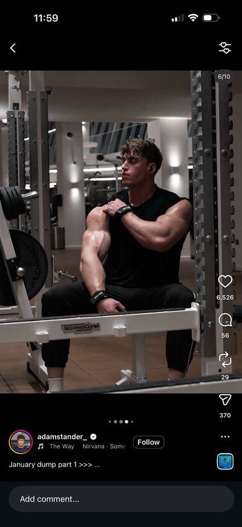
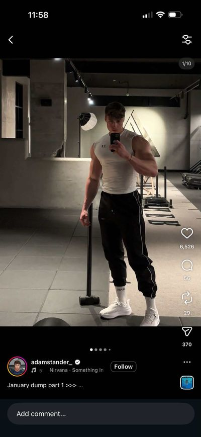
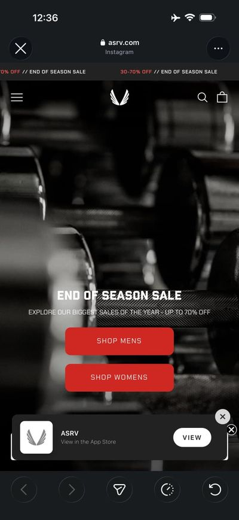
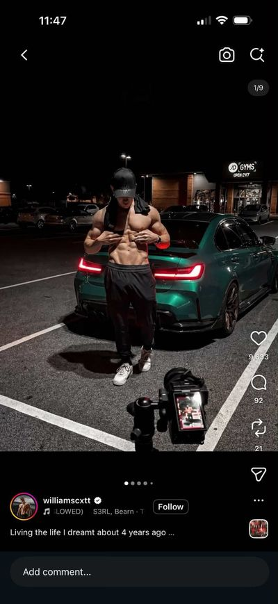
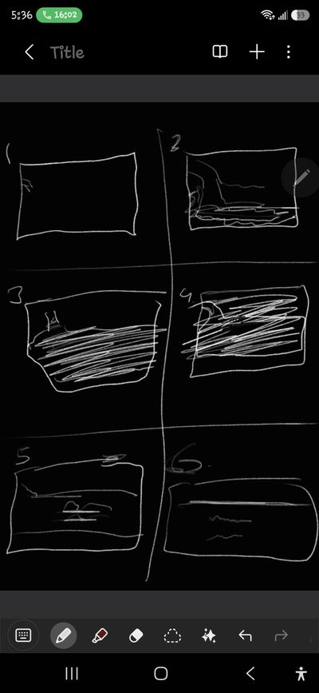

The system.
The mark
A vessel that fills.
On light — Obsidian, fills with the carbon fibre. Nav size, 4rem, 8rem.
On Obsidian — Zinc Silver, fills with the same carbon fibre.
| Colour | Obsidian on light, Zinc Silver on dark at rest — the mark rule carried in from the start. Never painted a colour and never Flame Teal: the red enters only as the liquid, only while it is pointed at, and it is the artwork itself — the same carbon fibre on both grounds. |
|---|---|
| Hover | The liquid rises in .75s to --vessel-level: 1.12 and drains when the cursor leaves. Full has to be well past 1: at level 1 the wave's troughs are still 10.5 units below the top of the mark, and at 1.08 they drifted along the top of the blade as small bumps of the base colour — invisible in the nav, plain at 8rem. The liquid is a mask, not a paint: the artwork is placed once and holds still, and the rising wave uncovers it — only the edge moves, the weave never slides. The mark is the brand rather than a control, so it is the one deliberate crossing of the dots-and-liquid rule. |
| Checked | Chrome, Edge and Firefox, opened from disk over file://, with a real pointer: no red at rest, the fibre rising from the bottom, the whole artwork showing within about half a second, and no red again once the cursor has left. |
| Size | 1.7rem in the nav. Holds at 16px as the favicon; smaller than that, the gap between blade and wedge closes. |
| Files | assets/img/zinstim-mark.svg — vector master and favicon; switches to Zinc Silver in dark browser UI. assets/img/zinstim-mark.png — the carbon-fibre artwork the liquid uncovers, 128×114, so it sits exactly on the vector. To change what the mark fills with, replace this file with art of the same 128:114 proportions. Larger sources are in the repo root (ZinstimLogo_mark.png, 512px). |
| Markup | Inline in every masthead, so it paints over file://. The carbon fibre comes in as an SVG <image> under an SVG <mask>, both inside that inline SVG — never CSS mask-image, which is what made the 07 Sep mark vanish when a page was opened from disk. Ids are unique per page: mark-clip and mark-fill in the masthead. |
Colour
Obsidian
#0D0D0D
Type on light. Full-bleed dark bands.
Zinc Wash
#E9ECEE
Page base. Cool, never cream.
Zinc Silver
#D6DDE2
The mark on dark. Rules and dividers.
Flame Teal
#00E0B8
You are here. Nothing else, ever.
Graphite
#6E7679
Secondary text on light.
Mood board




--elixir-void computes to hue 168°, a one-degree match.

Colour is an event, not a scheme
0.3–5.6% saturation across the board. If a page ever reads as colourful, it has left the reference.
The board's greys are warm — ours are not
Gym light lands at hue 15–18°. That is tungsten and skin in a photograph, not a surface instruction. Zinc Wash stays cool; the warmth belongs in the photography, never in the UI.
Red is taken
Hue 2°, and ASRV owns it at 96% of their saturated pixels. Using it would make us the thing this brand argues against.
Colour — the elixir
Elixir Void
#062821
The substance at depth.
Elixir Deep
#0A4A3F
Its body.
Elixir
#0B6B5C
The core.
Elixir Lit
#12B394
Where light enters it.
Elixir Glow
#5BF5D6
The specular rim. Rarest, use least.
The elixir never carries copy on light
Elixir Lit on Zinc Wash measures 2.2:1 — that fails at every size, large type included. Like Flame Teal, this is a dark-surface family. Measured, not eyeballed.
Gradients, but only inside the liquid
"No gradients" is a rule about surfaces and it stands — not on a button, a card or a band. A liquid is a volume with light passing through it. Painted flat it is just a flat rectangle, so here the gradient is the physics, which is what the rule was protecting.
The charge survives the state change
Flame Teal still means "live", and it still reads on the elixir at 9.3:1. It is not a second accent — it is the same accent, and the elixir is the depth behind it.
Teal never touches light
Flame Teal on Zinc Wash measures about 1.7:1. It is a dark-surface accent only — which is why it lives inside the opened nav and nowhere else.
No warm neutrals
Zinc is a cool bluish-white metal. Bone was dropped for exactly this reason. A warm base argues with the material and lands on the default cream every generated site uses.
No gradients
Zinc is a solid. A gradient would be the first dishonest thing on the page.
Type
divider
Two grams.
display
Small things, repeated.
bangla
ছোট জিনিস, বারবার।
ui
Origin · Elements
body
Creatine monohydrate is a commodity. Chemically
identical from every supplier. The powder is not the differentiator
and never will be.
meta
Width carries hierarchy
Archivo at 900/78 for display, 400/95 for body. One family at its extremes — width does the work a second typeface usually does, and italic is the only emphasis inside a headline.
No all-caps labels
The most common tell of a templated page. Sentence case everywhere.
Bangla sits beside English
Not beneath it as a translation, and not behind a toggle. Equal standing, same compression logic. Bangladesh is the first audience.
Space
xs
sm
md
lg
xl
2xl
You carry two grams of it. You have never once thought about it.
The divider
A claim, not a label
"Two grams" is a divider. "Our Products" is a heading pretending to be one.
Four or five per page, maximum
The fifteenth one is wallpaper.
Zinc gets named once
The line above is the only place on the entire site that explains the name. After it, no atomic numbers, no periodic table, no lab language anywhere.
Motion
Reveal over display.
Motion answers the cursor
Hover, focus and click get a response. Those are the moments motion belongs.
Nothing moves at an idle reader
No ambient drifting, pulsing or floating. One logged exception: the Origin rollcall cycles at 3.2s a line. The liquid moves only while it is being filled — under the cursor or keyboard focus, or once as a page title fills on load — and settles when the cursor leaves. The homepage pour is driven by scroll, never by a timer.
No fade-up on every section
One orchestrated page-load moment lands better than scattered effects. Scroll-triggered entrances on everything is the generated default.
Signals
On Zinc Wash — body text and above
Fail #B0332B · 5.28
Warn #8A5B12 · 4.94
Pass #2C6E4F · 5.13
Info #256D91 · 4.82
On Obsidian — safe at any size
Fail #FF7A6B · 7.63
Warn #F0B429 · 10.43
Pass #52D89B · 10.79
Info #6BC2EC · 9.77
Pass is not Flame Teal
Teal already means one thing — live, you are here. Giving it a second meaning would blunt the only signal the nav has.
Signals are not decoration
They appear on validation, the lab panel and the waitlist. If one shows up anywhere else it is being used as a colour, not a signal.
Never pair a light value with a dark ground
`--fail` on Obsidian is 3.10 and `--fail-lit` on Zinc Wash is 2.15. Both fail. Match the value to the surface.
Button
On light — primary, secondary, ghost, small
States — disabled and busy are the two that get skipped
On Obsidian — an empty vessel that fills
| Hover | Fills. A turning rounded square rises through the pill in .75s and turns only while it is filled. On dark the label flips to Obsidian as the surface reaches it. |
|---|---|
| Active | Scales to .985. The press has to be felt, not just seen. |
| Focus | Global :focus-visible outline, 2px at 5px offset. Never removed. |
| Disabled | Opacity .45, no transform, not-allowed. Hover does nothing. |
| Busy | Pointer events off, spinner at .7s. Under reduced motion the ring stops turning and simply holds. |
Liquid
Dots mean where you are. Liquid means what you do.
Liquid type — page titles and door names
Liquid
Vessel — a drawing fills inside its own line
Flood — the whole card fills
Button — an empty vessel on dark
| Button | From the liquid-button reference. A turning rounded square rises through the pill and turns only while filled. Every button on every page. |
|---|---|
| Type | From the liquid-type reference. The word twice: solid text, and a copy whose fill is a wave-topped body clipped to the letterforms. Titles pour to .5 on load — measured to put the waterline at half the cap height. Wear, Fuel, Instruments, Elements, and the Elements doors. |
| Vessel | From the liquid-SVG reference. The outline is the clip; a wave-topped body rises inside it. The homepage tees and the Fuel tub. |
| Flood | From the single-div fill reference. The card fills with Elixir Deep; small muted type brightens to Zinc Silver as the flood reaches it (muted on Elixir Deep is ~2.9:1). The homepage kit. |
| Touch | No hover, so vessels and door names hold at half — the idea stays visible. |
| Reduced motion | End states only: no turning, no drift, no travel. |
Which construction, for which shape
| Turning blob | A large rounded square rising through the element, turning as it rises. Only for containers near square — buttons, cards. In a thin row a straight edge of the square crosses as a slanted wedge; that was captured on Origin and replaced. |
|---|---|
| Wave-topped body | A body with the wave tile on its top edge, rising straight up. For thin, wide things — list rows — and inside type. |
| Clipped vessel | A drawing's own outline used as the clip, with a wave-topped body translated up inside it. For drawings — tees, the tub, the vial. |
| Masked reveal | The clipped vessel with its body moved into an SVG <mask>, over a still image: the level uncovers the picture instead of pouring a colour. For artwork that keeps its own texture — the mark. |
| Scroll-built shape | One path rebuilt every frame from scroll progress. Only the homepage pour. |
Where it is used
Row fill — Origin, what we make
- The shirtThat does not get in your way.
Numeral — Origin commitments: hollow, half on reveal, full on hover
01
| Page titles | .liq-type.liq-type--filled — Wear, Fuel, Instruments, Elements. Pour to .5 on load (measured to half the cap height), full on hover. |
|---|---|
| Door names | .door-name .liq-type — Elements. Fill when their band is chosen. |
| Rolling line | .rollcall__word.liq-type — the Origin H1. Each phrase pours full in Flame Teal as it lands and drains as it leaves; “Confidence / is” hold in Zinc Wash. |
| Stressed phrase | em.liq-type — Origin's quote (“stopped watching.”, pours full) and closing line (“repeated.”, half). |
| Numerals | .fact__n .liq-type — Origin commitments. The outline stays on top of the fill. |
| Row fill | .refuse--make — Origin. The refusals list below it stays still, on purpose. |
| Vessels | .vessel — the homepage tees, the Fuel tub, the Origin two-grams vial (a sliver; it never fills — the point is how little it is), the mark (a masked reveal of its carbon fibre). |
| Flood | .band--dark .kit__item — the homepage kit. |
| Buttons | .btn — every button on every page. |
| Colour in type | The type rule stands: no painted accent on a word. The one way colour enters display type is as the substance filling it. |
Views
Every piece, four ways.
| Selection | Choosing a view is navigation, so it uses dots, not liquid: the chosen slot's dot goes Flame Teal and its plate takes an Obsidian hairline. Hover only lifts the plate 3px. |
|---|---|
| Memory | Per piece. Leave Training Tee on Detail, open Floor Short, come back — still on Detail. |
| Transition | The dip. Out: fade .35s while sinking 1.4rem. In: rise .8s and fade .5s, after .12s. |
| Drawings | Defined once as symbols in a sprite at the top of the viewer and placed with <use> — twice in the display (for the two-tone split at the block edge) and once in the slot. Naming: v{piece}-{view}, e.g. v2-detail. |
| Photography | Plates are uncoloured Zinc Silver placeholders. Put an <img> in .vview__plate and in the matching .vpanel__view; object-fit does the rest. |
| Keyboard | Slots are buttons with aria-pressed. The piece rail is a tablist with arrow keys. |
| Phone | The strip stays four across, under the numeral; slots measure 77px at 390. |
Adding a view to a piece (the strip is four columns — a fifth view needs .vpanel__views' grid changed in §views)
<!-- 1. in the sprite at the top of the viewer -->
<symbol id="v1-inside" viewBox="0 0 200 226">
<path d="..." fill="none" stroke="currentColor" stroke-width="2.2"/>
</symbol>
<!-- 2. in that piece's .vpanel__plate -->
<div class="vpanel__view" data-v="inside">
<span class="vpanel__art vpanel__art--out"><svg viewBox="0 0 200 226"><use href="#v1-inside"/></svg></span>
<span class="vpanel__art vpanel__art--in"><svg viewBox="0 0 200 226"><use href="#v1-inside"/></svg></span>
</div>
<!-- 3. in that piece's .vpanel__views -->
<button class="vview" type="button" data-v="inside" aria-pressed="false">
<span class="vview__plate"><svg viewBox="0 0 200 226"><use href="#v1-inside"/></svg></span>
<span class="vview__label"><span class="vview__dot"></span>Inside</span>
</button>
Adding a piece
- Add a tab to
.viewer__rail— idvtN,aria-controls="vpN". - Add its four symbols to the sprite:
vN-front,vN-back,vN-detail,vN-fabric. - Copy an
<article class="vpanel">; rename its ids, code, caption and wordmark; point every<use>at the new symbols. - Change the previous piece's next-button label to the new piece's name.
- No CSS and no JS changes — the controller counts the tabs.
Field
On light
One email when the first drop is ready.
That address is missing a domain.
Disabled — nothing is for sale yet.
On Obsidian
One email when the first drop is ready.
That address is missing a domain.
Radius and elevation
--radius-sm | 2px. Cards, inputs, plates, swatches. Zinc is cut, not moulded. |
|---|---|
--radius-pill | 999px. The nav capsule and buttons only. |
--lift-1 | An edge. The sticky masthead once you leave the top. |
--lift-2 | Off the page. The door cards when their category is chosen. |
Page anatomy
Every page is built the same way.
- Head. Title, description, the SVG favicon,
theme-color,og:titleandog:description. Google Fonts, thenbrand.css. No page carries its own<style>— this guide is the only exception. - Masthead. The inline mark and the nav, identical markup on every page;
nav.jsmarks the current page. - Hero.
h1.t-display.lines.lines--load, the word in.liq-type.liq-type--filled, thenp.lede.settle. Home (the hero line, then the pour) and Origin (the rollcall) have their own. - Bands.
.bandis light,.band.band--darkis dark. Every change of ground is a fracture —.cleave--darkgoing into dark,.cleave--lightcoming back out. Never a dark band cutting straight to light. - The ending.
.cleave--dark→section.band.band--dark.join#waitlist→.cleave--light→.marqueewhere the page has one → the dotmark. - Footer.
footer.footwithnav.foot__nav. The current page's link carriesaria-current="page"and gets the teal dot. - Scripts.
nav.js,site.js,dotmark.js, all deferred. Every page reads and navigates without them.
Component inventory
| Component | Classes | brand.css | site.js | Used on |
|---|---|---|---|---|
| Masthead + nav | .masthead .home .navgroup .capsule .morph .rise | §nav | nav.js; sticky hairline | every page |
| The mark | .home__mark .mark .vessel .mark__art | §the mark, §liquid | — | every page |
| Fracture | .cleave .cleave--dark .cleave--light .cleave--elixir | §cleave | reveal | every page |
| Liquid button | .btn .btn--secondary .btn--ghost .btn--sm | §button, §liquid | — | every page |
| Liquid type | .liq-type .liq-type--filled | §liquid | load (is-ready), reveal | Wear, Fuel, Instruments, Elements, Origin |
| Vessel | .vessel .vessel__level .vessel__liquid .vessel__line | §liquid | — | Home, Fuel, Origin, the mark |
| Join band | .join .signup .join__lede .join__note .join__label | §liquid, §waitlist | — | every page |
| Footer | .foot .foot__nav | §foot | — | every page |
| Marquee | .marquee .marquee__track | §marquee | marquee | most pages |
| Dotmark | .dotmark-canvas | §dotmark | dotmark.js | every page |
| Pour | .pour .pour__stage .pour__vessel .pour__claim | §pour | pour | Home |
| Doors | .doors .door .door__face .door-card | §doors | doors | Home |
| Drop | .drop .piece .piece__frame .piece__state | §drop | — | Home |
| Kit + flood | .kit .kit__item .kit__specs .kit__state | §kit | — | Home |
| Viewer + views | .viewer .vtab .vpanel .vpanel__view .vview .sprite | §viewer, §views | viewer | Wear |
| Rollcall | .rollcall .rollcall__word .rollcall__note | §rollcall, §origin | rollcall | Origin |
| Facts | .facts .fact__n .fact__t | §facts, §origin | reveal | Origin |
| Lists | .refuse .refuse--make | §refuse, §origin | — | Origin |
| Two grams | .origin-name .two-grams | §origin | reveal | Origin |
| Quote | .quote-band .quote .quote__text | §quote, §origin | reveal | Origin |
| Lab panel + tub | .lab-panel .purity-n .lab-table .fuel-split .fuel-tub | §fuel, §lab panel | — | Fuel |
| Door bands | .door-band .door-name .door-sub .plate | §elements | — | Elements |
Quality floor
Works down to mobile. Visible keyboard focus on everything interactive.
prefers-reduced-motion honoured — movement removed, never
information. Contrast measured against the values above, not eyeballed.
Readable and navigable before JavaScript loads.
How it is checked
- Contrast is computed from token values, never eyeballed. A colour that fails on one ground gets a paired token (
--fail/--fail-lit). - Interactions are verified on the real pages by forcing
:hoverthrough Chrome DevTools and reading computed values back — not by screenshot alone. - Sizes and levels are measured: the title level (.5) from the letterforms' ink height; crowding from text ink, not element boxes.
- Every page: balanced tags, no duplicate ids, every
url(#…)and<use>resolves, the same ending order, zero horizontal overflow at 390px with touch emulated. - Test through a server that sends
Cache-Control: no-store. A plain static server lets the browser keep a stale stylesheet for minutes after an edit.